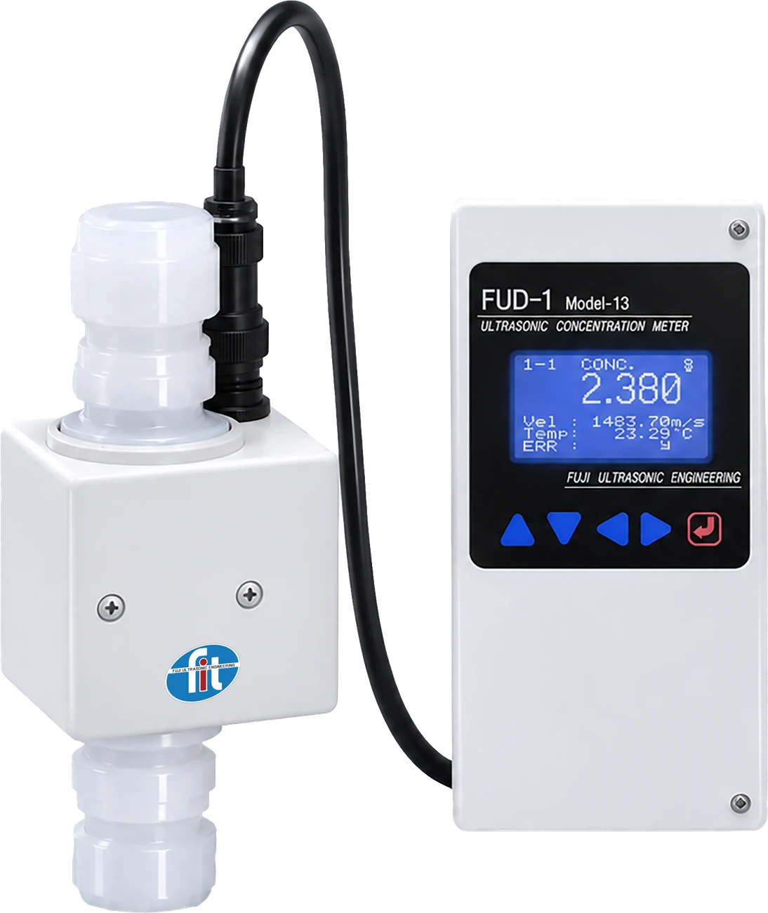
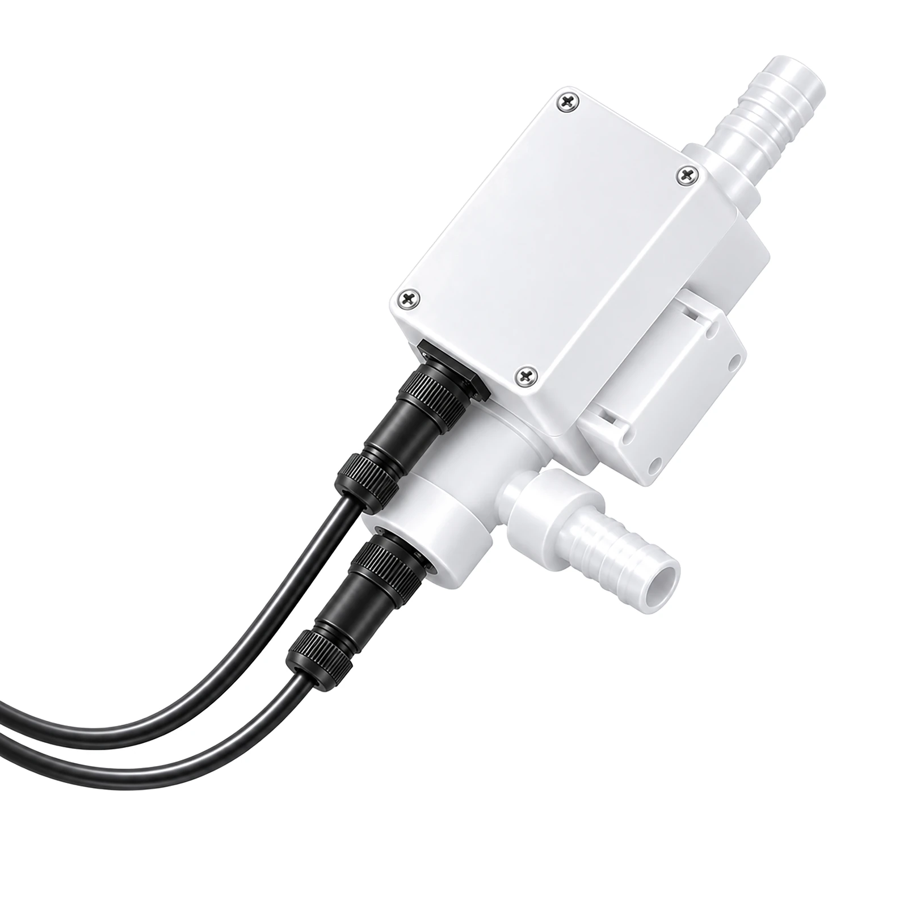
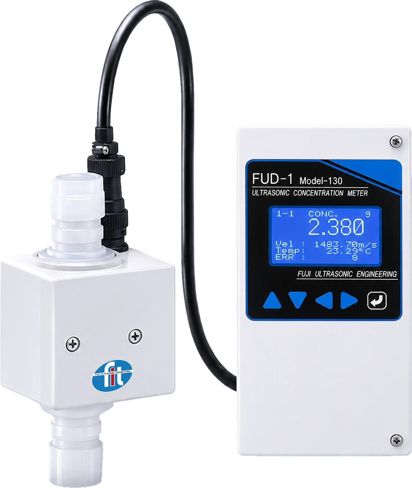
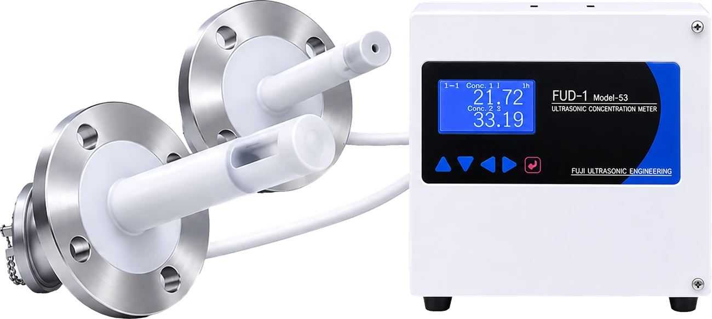
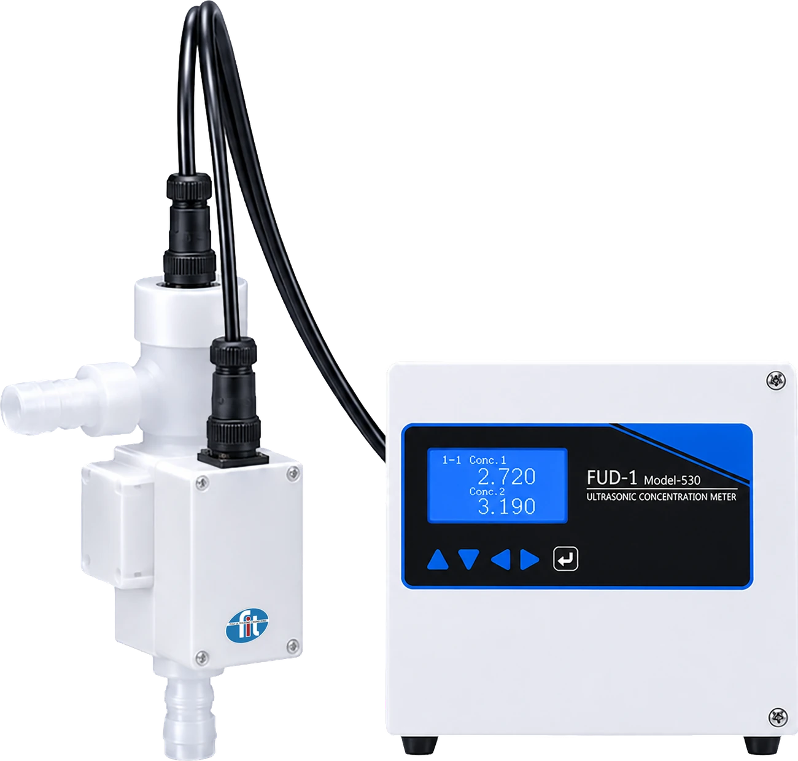

about FUD-1 M13
- 초음파 기반 비접촉식 농도 측정
- 기계적 가동부가 없는 구조
- 산•알칼리•유기용제 등 다양한 약액 대응
- 측정 방식
- 초음파 전파속도 • 온도
- 측정 대상
- 2성분 중 1성분 농도
- 출력
- DC 4-20mA • RS232C
- 전원
- AC 100-240V • 50/60Hz
유체 온도 0-100°C • 최대 10채널


약액 속을 지나는 초음파의 전파 속도로 농도를 읽습니다.
가동 부품이 없어 교체할 소모품도, 주기적인 교정도 없습니다.
산 · 알칼리 · 유기 용액 어디든,
설치 즉시 실시간 공정 제어에 연결됩니다.
Conc. Meter
Technology
FUJI Ultrasonic · FUD-1

Features
용매 중 1성분(Binary)의 농도를 음속과 온도로 산출. 광학·전도도 방식이 흔들리는 조건에서도 안정적입니다.
가동 부품이 없어 부품 교체와 주기 교정이 필요 없습니다. 설치 시에도 별도 교정이 없습니다.
SUS316L · 하스텔로이 · 티타늄 · 탄탈 · PFA · PTFE · PVDF 등 약액 부식성에 맞춰 선택합니다.
4–20mA · RS232C/RS485 출력, 상·하한 알람, 자기 진단과 페일세이프 모드 내장.
FUD-1 Series
유체 온도 0-100°C • 최대 10채널

유체 온도 0-50°C • 최대 10채널

최대 7채널 • 설치 시 별도 교정 불필요

입력 필요

공통 사양 · FUD-1 Binary Model
| 측정 파라미터 | 초음파 속도 · 온도 |
|---|---|
| 아날로그 출력 | DC 4–20mA (농도 · 옵션 온도) |
| 디지털 출력 | RS232C (옵션 RS485) · 농도/온도/속도/에러 |
| 알람 | 상한 · 하한 · 에러 |
| 전원 | AC 100–240V 50/60Hz · 30VA |
| 사용 환경 | 0–50°C · RH 85% 미만 |
| 적용 약액 예 | NaOH · HCl · NaClO · H₂SO₄ · NH₄OH · HNO₃ |
| 기능 | 오프셋/게인 · 평균 · 자기진단 · 자동 에러 해제 |
정확도·측정 범위·응답 속도는 제조사 페이지에 공개되어 있지 않아 기재하지 않았습니다. 약액별 사양서로 확인이 필요합니다.
출처: FUJI Ultrasonic 제품 페이지
End User / Equipment Supplier